.jpg)
Dev cursando Desenvolvimento de Sistemas na ETEC de Cidade Tiradentes.
Veja Meus ProjetosOlá sou o Lucas, atualmente estou cursando Desenvolvimento de Sistemas na ETEC de Cidade Tiradentes com foco na area de desenvolvimento web com HTML, CSS buscando mais conhecimento para embarcar no mercado de trabalho na área de front-end mas sem desprezar experiencias com o back-end.

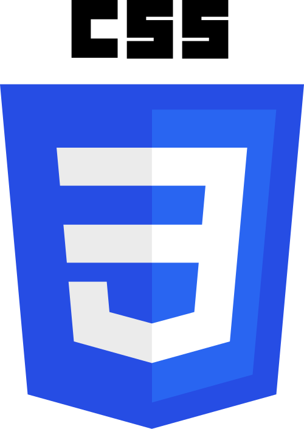


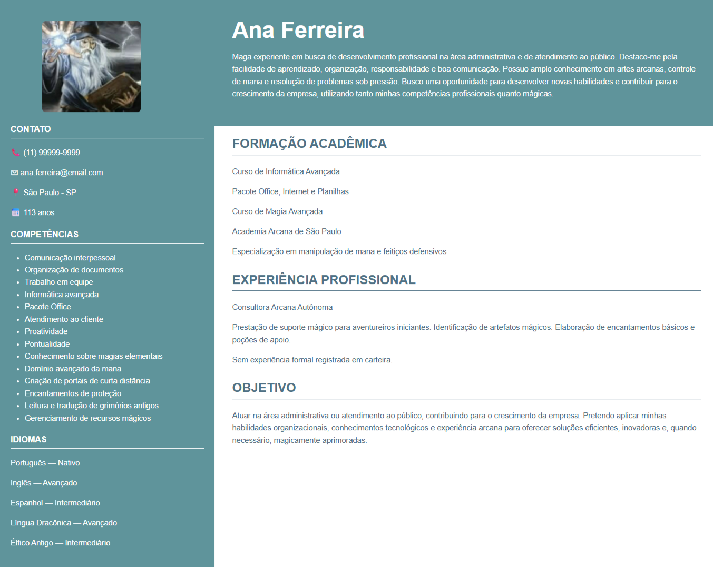
Este projeto consiste em um curriculo digital, criado primeramente com somente o HTML, porem, com o passar do curso e como começamos a aprender o CSS, tivemos que implementar um estilo a pagina, utilizando um modelo de curriculo já existente. Nota importante: É um curriculo totalmente ironico, com a mistura de elementos ficcionais com elementos reais.
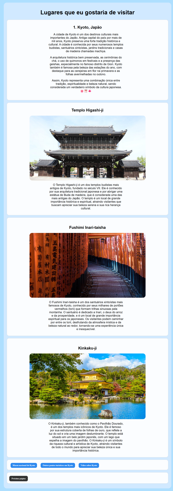
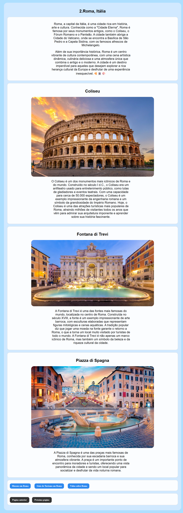
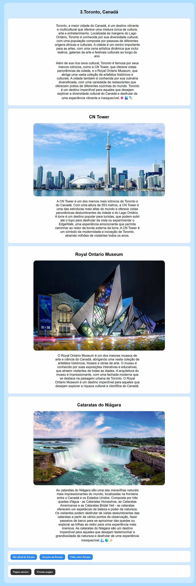
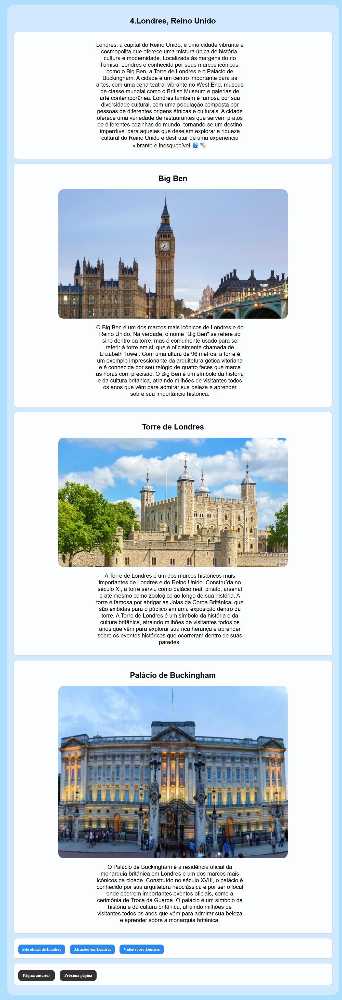

Este é um projeto sobre 5 locais que eu iria caso tivesse a oportunidade. O objetivo desse projeto era que aprendessemos sobre o endereçamento relativo e absoluto, para que conseguimos navegar entre as paginas dentro do site, cada página tendo a descrição do local, 3 pontos turísticos com uma descrição e 3 sites relacionados aos locais. Esse projeto tambem foi criado antes de desenvolvermos conhecimento necessário sobre o CSS, sendo atualizado logo após a implementação, no projeto curriculo.
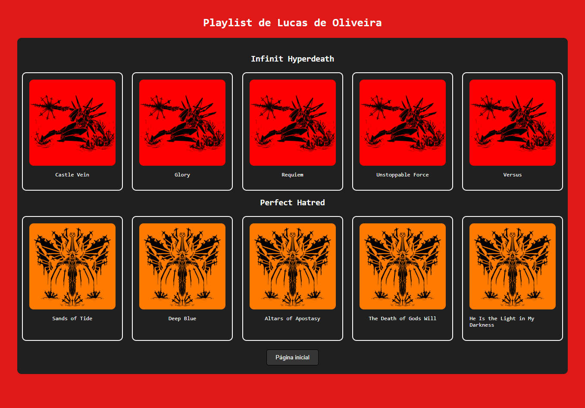
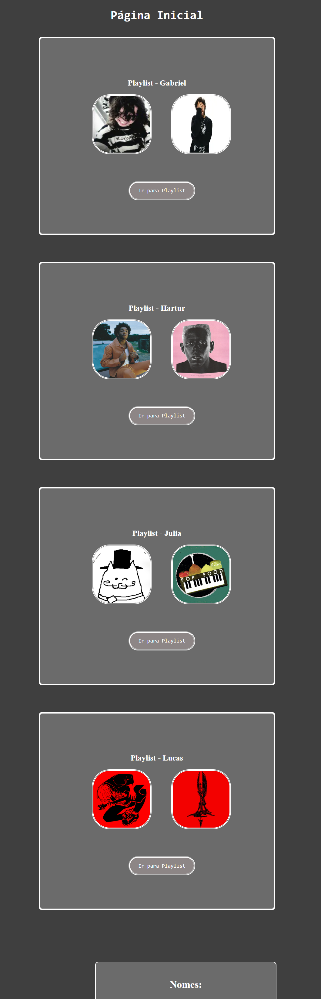
Este é um projeto de uma playlist musical criada em grupo, com o objetivo de cada estudante de reunir 10 músicas que gostam. Esse foi o primeiro projeto que começou com o HTML e CSS, então tivemos a oportunidade de aplicar nossos toques artísticos desde o começo. Cada estudante deu suas ideias, e conseguimos juntar as ideias que achássemos interessantes. Com a ajuda de pesquisas, conseguimos até adicionar um modal amador.
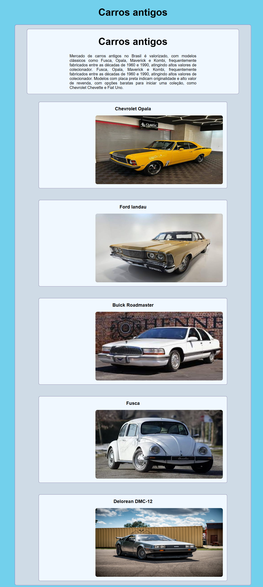
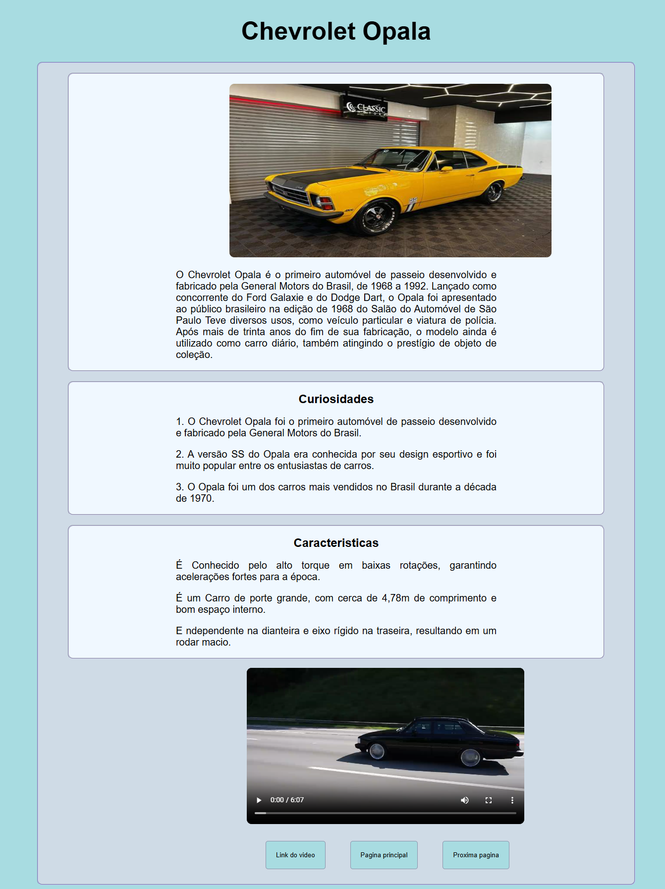
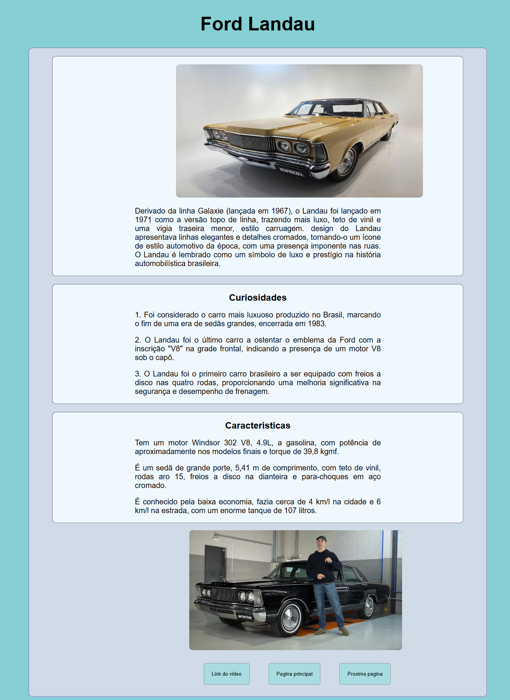
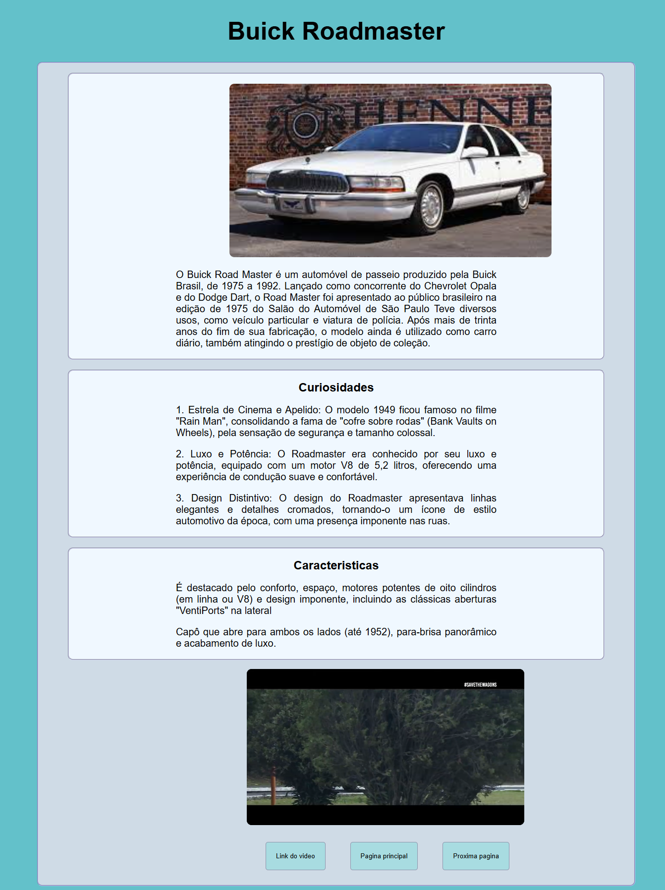
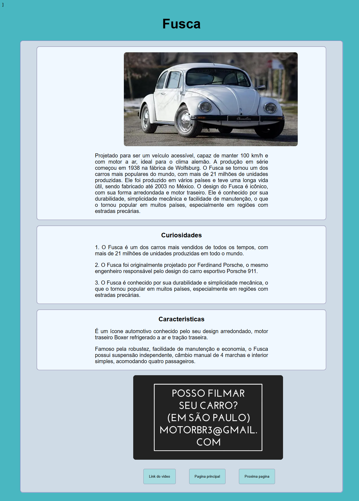
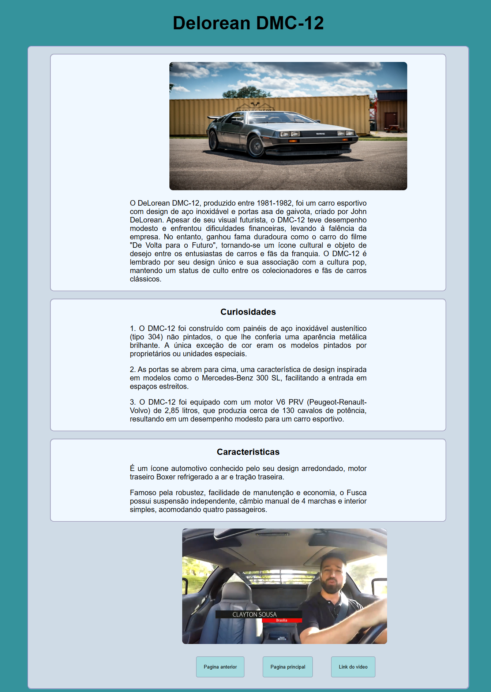
Este é um projeto de um site de carros criado em grupo, com o objetivo de mostrar diferentes modelos de carros, suas características e preços, o objetivo do projeto era que pudessemos aprender a mexer nas cores de fundo e também criar um hub onde o usuario pode navegar sem que necessite de ficar indo uma pagina por vez, como uma atualização técnica do projeto viagens. Este é um projeto que eu e minha dupla tivemos um tempo difícil para adicionar as mudanças do CSS, mas buscaremos atualiza-lo futuramente, utilizando o conhecimento de aulas futuras.